Summer Vacation 2008 Universal Orlando & Clearwater Beach
Source: 2008 Summer Vacation 2008.doc
Summer Vacation 2008 Universal Orlando & Clearwater Beach
Well we had no summer travel plans and with the cost of gas we were actually considering a trip to Branson! Alan was against that though and even Branson wasn’t very cheap since there is a lot of tempting stuff to do there. But Alan found out that they were sending him to a convention in Orlando in June! This was only about 3-4 weeks ahead of time so we (I) would have to plan quickly! His boss gave him such short notice on the trip that all of the convention hotel choices were taken! We sat one evening with him at the laptop and me at the computer going through a list of 25 or so hotels trying to find something near the convention! Practically everything was booked up! The convention was at the Orange Co. conv. Center not at or near Disney! So I said that I didn’t want to even go toward or near the Disney area at all if we weren’t going to be doing Disney! We ended up booking the Royal Pacific Resort at Universal Studios. This hotel is right across the street from Universals parks but the kids and I have never been to Universal parks before. Alan has been once on a previous convention trip. We knew that being at a Universal hotel and SO close that it would be tempting to go into the parks but I didn’t know what all they had for Owen to do since I know they have a lot more adult rides then Disney has. So I got online and looked around to see what they had and even though there was plenty he couldn’t do there was still quite a bit he could and I knew Alan and Olivia would love the adults rides even if Owen and I just went to the pool instead!! BUT most importantly it would be SUMMER!! So we agreed to not mention rides to the kids and just see how things go.
After finding the hotel there really wasn’t a lot left for me to do. No flights to look up since we were driving, no rental car, since we were driving our own van, no dinners to plan at Disney since we weren’t going there! So I looked into the drive and where we would stop on the night on the road. We also spent some brief and I do mean brief time discussing the trip and the fact that Alan had to “work” every day he was there! So since the last day of the convention was on a Thursday and we would check out on Friday morning we decided to go to the beach for the weekend. This would give Alan some “vacation” time too. I have never planned so little for a trip to Orlando in my life including BEFORE the internet!! I mostly looked for hotels for the drive and some place to stay at the beach.
We finally decided that we would take 2 nights to get there and let work pay for one night on the road and we would use points for the other night. This way on arrival day we could get there early afternoon and Alan would have the day off with us. Then we booked a hotel at the beach. The Marriott Suites Sand Key just over the bridge from Clearwater Beach. We used points for 2 nights and then used a coupon for buy one get one free for an additional 2 nights! So we would spend 4 nights here checking in on a Friday and out on Tuesday before driving home! This give us 5 nights in Orlando and 4 at the beach! That sounds like a lot doesn’t it? Well it really wasn’t we could not believe how fast that flew by!! Maybe it was because with all the driving days we were gone a total of 13 nights so it felt like we were gone along time but the nights in Florida were over SO fast!
Friday June 20th 2008 Alan worked all day and Olivia worked the morning shift at the marina so she got off at 2pm. We left home at 5:50pm with 15,772 miles on the van! (Chrysler town & country which we got in the spring) I had put $20.00 worth of gas in it today because I was literally on empty! But I didn’t want to put too much because I thought work was buying all the gas. However, Alan said that what they do is you start off with a full tank of your OWN and then when you get home THEY pay to fill it back up plus all the gas in between. So we stopped in Effingham to fill it up ($58.00 paid by us and it was $3.99 a gal) and then we went next door to Steak & Shake to use our coupons! 4 double cheeseburgers and fries plus 4 kids shakes on sale for 99 cents came to $19.00.
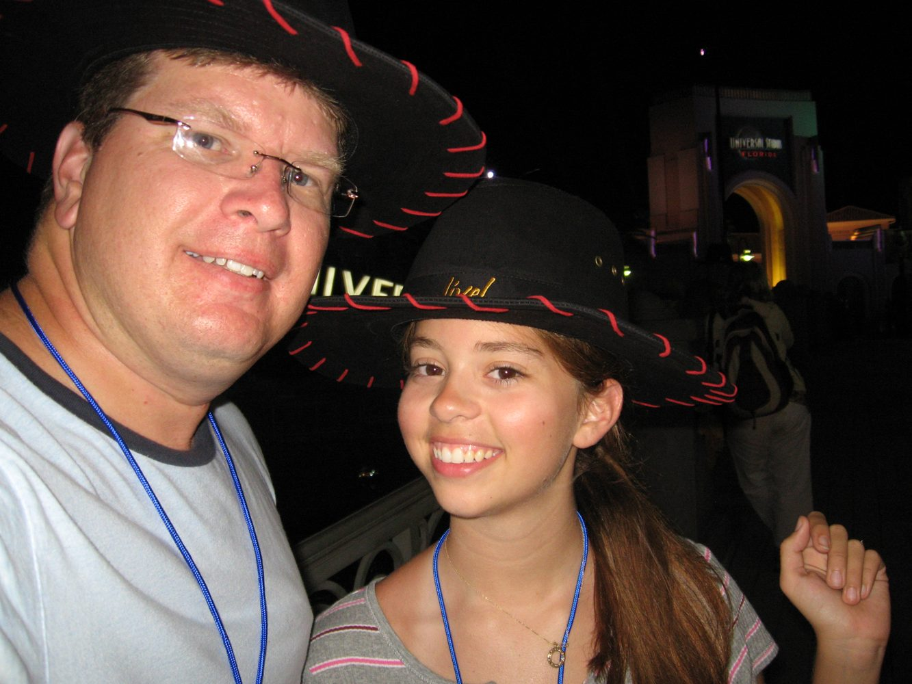
Oh I forgot to say that Owen fell asleep around Strasburg and slept till we pulled in to get gas in Effingham!! Haha! This kids never sleeps on trips! He woke up and said he wanted food and a movie started!!!
So we ate and drove on to Paducah Ky. Exit 4 at 9:10pm We stayed at the Courtyard Inn with a rate of $109 that included hot breakfast buffet for all 4 of us. (that doesn’t come free at courtyards) Tonight was paid for by the company. Love that! Alan checked us in and then left and went to Wal-Mart for hot wheels while we went on up the room and talked Owen out of swimming tonight! The kids did a lovely dance for Alan in front of the big window and he said all the Harley riders in the parking lot could see them but what he doesn’t realize is that the kids don’t care!! We’ve driven a measly 3 hours tonight and we are already sick of it!! Alan got back to the room and then we had lights out at 10:30 even though I tried to stay up later and watch tv but got told NO!
Saturday June 21st 2008 I woke up at 6:10!! I laid there till 6:30 then I showered. Everyone else was up at 7 except for Owen who we woke at 7:15. down for breakfast buffet at 7:30 it was pretty good but glad it was free with the room as I believe they want about $8 a person for it!!
We left the hotel at 8:10am and got on the road. Mom called just as we were entering Tennessee and having computer problems. She told me her issues then told me to hang up and ask Alan and then for ME to call her back and tell her what he says. Well I tried to do it but he just says give me the phone!! Then we got to the welcome center and had planned to stop there anyway since we drank a LOT of free OJ at breakfast and because Alan needed to take out his contacts, they were bothering him. So while some of us went in to go potty he stayed and talked to mom and took out his contacts. When I came back out after gathering up handfuls of brochures which just end up cluttering up the car Alan was off the phone and we drove on!
We are headed to Manchester which is an hour south of Nashville to see Alan’s dad and there new house. This was my idea! He wasn’t interested in it! But since it’s right off the interstate and we have a good reason why we can’t stay TOO long I thought it would be interesting and give us something to talk about on the drive later!! According to the grand plan we are to arrive around noon, have lunch with them and then go see the house. We are actually running ahead of schedule which is not good since we had such a BIG breakfast.
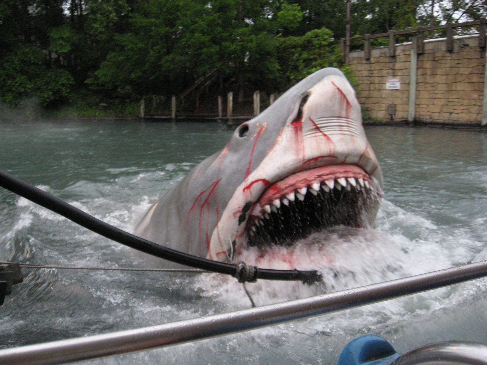
We spoke to them this morning and said we’d call when we were a few miles from the exit so we arrived in Manchester at 11:15am and since my curling iron died this morning and I threw it in the trash at the other hotel we were going to Wal-Mart for a new one. (we spent $27 but I had a gift card from Alan’s rental car points worth $25 so yeah!!. Don’t know what we bought besides the curling iron except that lib got the 2nd traveling pants book to read.) They said they’d meet us in the parking lot in 20 minutes or so. This worked out well and we met up with them then said we weren’t too hungry yet so lets go see the house 1st. We followed them to go see the new log home they are building and a few weeks from moving into. Owen played outside with his cousin’s. (Natalie and Austin) while we looked at the house and talked for at least 45 min. then the kids were hungry so we left and followed them to a local place by the interstate called Crockets Tavern!! As in Davy Crockets! I thought it would be a nightmare from the sounds of things but it turned out to be a little like a Cody’s Roadhouse or similar. The kids meals were free for the 3 little ones and Olivia ordered a kids meal but since she’s older it wasn’t free. Everyone had sandwiches except me I had a grilled chicken salad. I never order salad but BBQ didn’t sound good and since I wasn’t super hungry I thought what the heck. Well that was the best salad I have had in years!!! So good! Even Shirley who was sitting beside me looked jealous of my salad. Haha. Gary paid for lunch! Then we all used the restroom and met outside to say our goodbyes. These seemed to be taking along time but then it started to sprinkle rain so everyone got on with it and got in there cars to leave. Owen got in the van and before he had the slider all the way shut he was steaming mad! He said that grandpa Gary had hugged us all 3 goodbye but didn’t even SAY goodbye to him!! Actually I don’t think he ever talked to Owen the whole time. Only spoke to lib because she sat across from him at lunch. But Owen said and I quote “I am done with these people” we said why and he said “they didn’t even say bye to me lets get out of here” Now the way he said it and the way he was so disgusted with the situation was funny but then again it did hurt his feelings and then again he also did spend the whole time playing with the kids not hanging out with the adults who were talking and visiting. But now that he is finally getting old enough to have a memory of people we only see every 1-2 years he defiantly has one of that!!
Well the interstate was right there so we just hopped right on but then as SOON as we got on remembered that we had forgotten to get gas! Manchester has 2 exits. There is one for the Crockets restaurants and a gas station and another for the Wal-mart and the whole rest of the town. So we had exited at the 2nd exit but gotten on at the 1st exit. So we drove on down and exited again at the 2nd exit for gas. In the rain! $65.00 @$3.79 gal.
Back on road at 2:30 we drove on and entered Georgia and went through Atlanta we took the bypass this time. Then when we got to Macon there was a bypass for it? Who knew? I didn’t realize Macon was big enough for a bypass so since we had taken it for Atlanta with pretty good luck we took it for Macon too. Well that was a mistake (which was blamed on me since I have the map!) it seemed like it went WAY out of the way because well it DID. And while we were on the bypass way out of our way in the suburbs we stopped at a chikfila to use the bathroom and you can’t go there without some chicken so we got 3 12pc baby nuggets. I have no idea how much that was because I was in the bathroom! We got back in the car and divided them up to share. Those things are so good.
We drove on and were getting REALLY antsy! I guess because we were spoiled. We only had to drive 3 hours last night then 3 hours this morning to get to Gary’s but now we have 5-6 hours to drive!
We arrived in Cordele Ga. the watermelon capital of Georgia at 8:06pm which was actually 9:06 Georgia time! We are staying at the brand new Fairfield Inn with points tonight. It is the last night of the watermelon festival and after Alan dropped us off he went to Wal-mart for hot wheels and he said people were walking around at the stop lights trying to sell him a watermelon! After Alan dropped us off at the hotel I had to take Owen to the pool because I had promised last night and all day today that he could swim. Alan had instructions for bring us back a pizza. I wasn’t in the mood to get wet swimming and the pool was indoors which I thought was weird for southern Georgia so I sat and let Owen swim for 30 minutes then when Alan got back we went to the room for pizza which work paid for since he is technically traveling for work which we didn’t think of when we were at chikfila earlier! DARN! We stayed up till 12 Georgia time and then set the alarm for 8am so we wouldn’t sleep till noon!
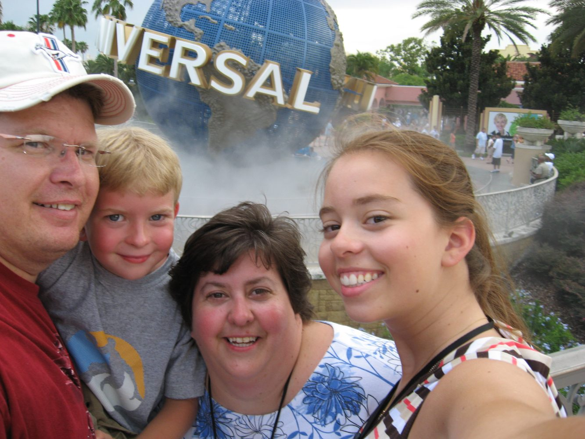
Sunday June 22nd 2008 We are now on the new time zone. Alan woke me up at 8:15! He had woken up just a few minutes before the alarm and went and showered then came in to wake me. I can’t believe I slept through all of that! I took my shower then Lib had to shower and this took forever for both of us to shower and get ready. The guys went down and ate while waiting for us. We finally went down to eat too and then left the hotel at 9:40!! JEEZ!! We got gas $58 @$3.91 gal. and then on our way to Florida for the 3rd day! Haha! About 11:30 we stopped at a Macy’s to go potty and because Olivia was looking for a prom dress that she had found at Macy’s before prom but was wanting to find it marked down. They had none left so we used the restroom and left but it still took at least 20-25 minutes! We are now getting very restless and READY to be there!! I don’t understand why they couldn’t put Orlando right at the state line!!
WE’RE HERE!! Finnnnnalllllyyyyy!!!!! At 2:30pm we arrived in Orlando! That last half hour was a killer!
We saw the hotel from the interstate and found our way there. It was raining pretty good for the last half hour but seemed to pick up as we came into the hotel parking area! We pulled under the awning and they came out with the cart and loaded our bags up and we also carried as much as we could on us too. I have never see so much crap! And it was all so neat and organized when we left home. NOT NOW!! We walked up to the check in area and let me just say here and now that my favorite thing Owen said all week and I agree with it mostly is “this place tries to copy disney but they suck at it”!!!!!!! funny!! So Universal tries very hard to be like Disney and this being our 1st time here vs. 14 or so trips to Disney it is hard not to notice it. Even though there was no line check in took awhile because they want to explain everything to you and go over this and that and on and on!! But good news is the room is ready because we are all about to drop everything we are carrying. Room number 1740 in case I ever need to know that? With a view of the park and on the top floor! Yeah for the top floor! Oh and they will be bringing up a mini fridge for Owens medicine in a bit. Oh yeah I forgot to add that after we unloaded the van Alan went to go park it in the self parking lot which they charge for like $10 a day! (free at Disney! but whatever!) and he had to do this in the pouring rain!
So up to the room and our luggage and fridge arrived and this room could be a little bigger. Much bigger then Pop Century yes but still could use some extra space. There is a large foyer area which is a lot of wasted space but we managed to pile it high! While Alan and I unpacked and he actually helped this time the kids fixed lunchmeat sandwiches and enjoyed the view. Then it stopped raining so the kids put on suits and headed to the pool. Alan and I finished our sandwiches then went to the pool too this was around 4pm. We all got in and swam it is a very big and nice pool with water squirting cannons and basketball goals and lots of lounge chairs. And while we were all in this lifeguard came over to Olivia who was in the pool with us and asked her to come over to the sandy beach area to play volleyball with them but she just laughed at him!! And said NO! it was very funny!! After about an hour Olivia and I sent Alan to get us drinks from the bar! I got a REAL one ($8.50 and lib got a virgin $6 or 6.50?) and we all 3 sat out and watched Owen playing on the water play ship they have. Then it started raining again and storming so they closed the pool. We went back to the room and changed then the lady came to change out all of the feathers and there were a lot so that took her awhile but we left and wetn over to the City Walk area. This is universals version of Downtown Disney. It was only raining lightly by now. We had decided since Alan got Universal passes with his convention paperwork that we would buy me and the kids passes to universal. You can get in all week long for $70 per person. So that is the ticket we bought because we thought that even though they only have 2 parks we can go over only in the evenings after Alan is done working and after the sun goes down a bit! I was very skeptical of this I didn’t know if we would be able to find enough to do or if we could handle the heat but with the view from our window being of all the rides they weren’t going to be able to handle not going!!
So we went over to the area where you take care of all the tickets and it didn’t take too long and then we went into Islands of Adventure (universals 2nd park) since this is the one we have the most view of this is where they wanted to go. Alan and Lib took off to go ride the BIG hulk roller coaster and Owen and I wondered around in the drizzling rain. One other perk about staying at a Universal hotel is you get front of the line access to rides. They give you a thing to wear around your neck and you flash your badge like a VIP and they have a special line for you and you get on next!! This was AWESOME!! Especially since its summer and hot and crowded!!
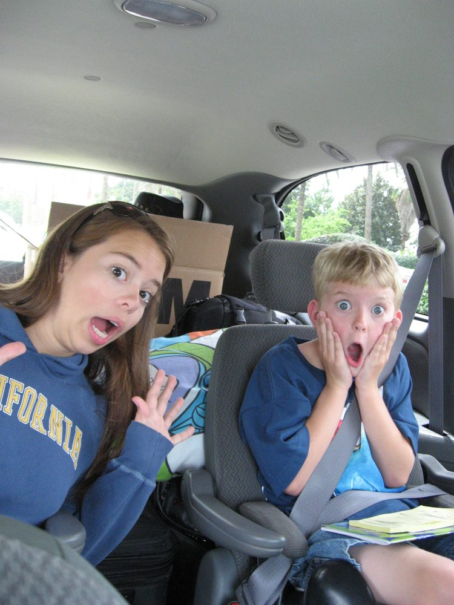
Ok so Owen and I stepped into a gift shop to get out of the rain and he wasn’t 2 steps in the door and he picks up the 1st toy he sees and says he’d really like to have that!! I kid you not! It was a $17 Spiderman toy that you can get at walmart for like $8! I said NO and we left! It didn’t take them long to ride the coaster with the front of the line (FOL) thing. So we all went over to ride the Spiderman thing together and it is indoors and I thought I could handle it but you got in this big vehicle thing and we were off on a type of 3-D simulator type of ride and it spun, got dark, had scary smoke, made me claustrophobic and scared the living crap out of me! I couldn’t look straight ahead for fear of the spinning making me sick so I looked beside me at my sweet family who were all 3 loving the ride! Even Owen! I just kept my head turned toward them till it was over and then got off. It wasn’t like a fast or roller coaster type of ride it was so difficult to describe! But once we were done we went for something tamer over at the Dr. Suess area. The kids went and rode some kiddie train thing and Alan and I sat down so I could recover a bit. It took them forever to ride this don’t know what the problem was. Then we walked all the way to the back of the park so Alan and lib could ride Dueling Dragons it’s the coaster that is actually 2 coasters and they look like they will hit each other. Owen and I hung out while they went to ride. It was drizzly out and we waited for what seemed like forever but it turns out they were riding both of the sides of the coaster I didn’t know that. So that is what took them so long. It was awesome they loved it blah blah blah Owen and I didn’t give a crap we were ready to get out of the rain and get some dinner!
It was about 7:30 and we decided to walk back to the hotel instead of taking the boat because Alan said it wasn’t that far!!!!!!!! Well he ate those words it was really far what you don’t realize when you take the boat is that the sidewalk that follows along the water also has times where it cuts back into the landscaping and it took forever and even Alan knew he was wrong. It had stopped raining while we were walking but we were so hot and sweaty and we had to go to the room so he could get his work credit card for his dinner which is why we didn’t eat at City Walk he didn’t have his work card!
Well when we opened the door to the room there it was the one thing we don’t get at Disney! Free cookies and milk waiting for us! When we checked in we got to pick one welcome treat. The choices were beer and nuts, wine and cheese, cookies and milk. Well duh!! And those were good cookies big and yummy. They had a fancy ice bucket with our big pitcher of milk sitting in it and our tray of cookies. Score one for universal. Well we crashed in the air conditioning and had our treats. We also looked over the hotel menus and decided that since there was a dive in movie tonight that we would just put on our suits and cover ups and go down and order at the restaurant out by the pool and then watch the movie and swim. It sounded like so much fun and such a good plan!
We got there at almost 8:30 and when we asked if we were to just seat ourselves or not we were informed we could sit anywhere we wanted but we only had 4 minutes till the grill closed so we had to place our order quickly!! Luckily we had just been looking at the menu in the room so we ordered fast which we also thought was ok with us since we were starving and we wanted to get done fast to see the movie and swim. WELLLLLLLLLLLL this turned into the longest and worse meal of the whole trip! 1st of all the lady waited on at least 2 more tables after us and didn’t tell them they had to hurry and order. Then someone came over and sat at the table right by ours when there were about 20 empty tables and started smoking so we moved since we didn’t have any food yet anyway. And speaking of food at least 45 minutes to get our food!! And we had ordered simple things. We got an order of nachos for our appetizer then I got the quesadilla as my meal, Owen had a kids meal, lib had chicken strips I think and Alan had some kind of sandwich but its not like we had steak!! Oh and they didn’t bring the nachos till they brought the food so we just sat there for 45 minutes and it was dark and we never saw our waitress! Someone from the kitchen would bring something for other tables but never us. At 8 the movie never started so Alan went and asked the lifeguard and he said they were showing it in the lobby tonight because it was storming earlier! ( that was a couple hours ago!!) so the evening was not turning out as planned. It sounded so nice and relaxing and it WASN’T. once we finally got our food it was so dark in the area we could barely see it. Owen ate fast and then went to swim. We also shoveled the food in and paid (work paid for Alan’s and the nachos) went to swim at 9:45! Which wasn’t even fun because even though the water was a normal temp the rain seemed to have really cooled things off and here we are in the water with teeth chattering and freezing! We always talk about how nice it would be to go the parks and be able to come back and go for an evening swim and here we are doing it and its cold! I even saw on the news that it was down in the low 70’s this evening!
We swam till 10:30 then went to the room and Alan and I took turns having bathroom issues! The kids told us to go to the lobby! This went on for the next 2-3 hours. The kids fell asleep by 11pm and Alan and I stayed up playing bathroom tag and watching the movie Hairspray with John Travolta on HBO. We had never seen it before but eventually it wasn’t that good and he fell asleep at 12 but kept watching till 12:45 when I gave it up!
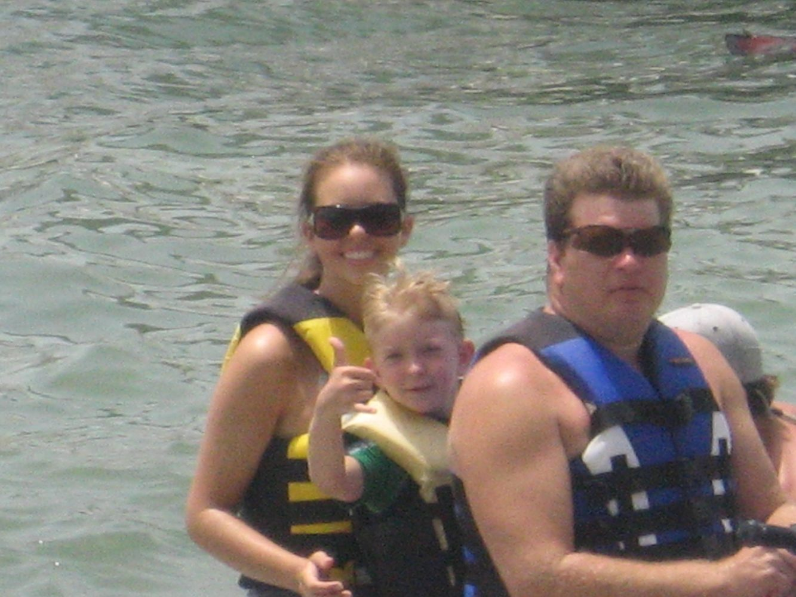
Monday June 23rd 2008
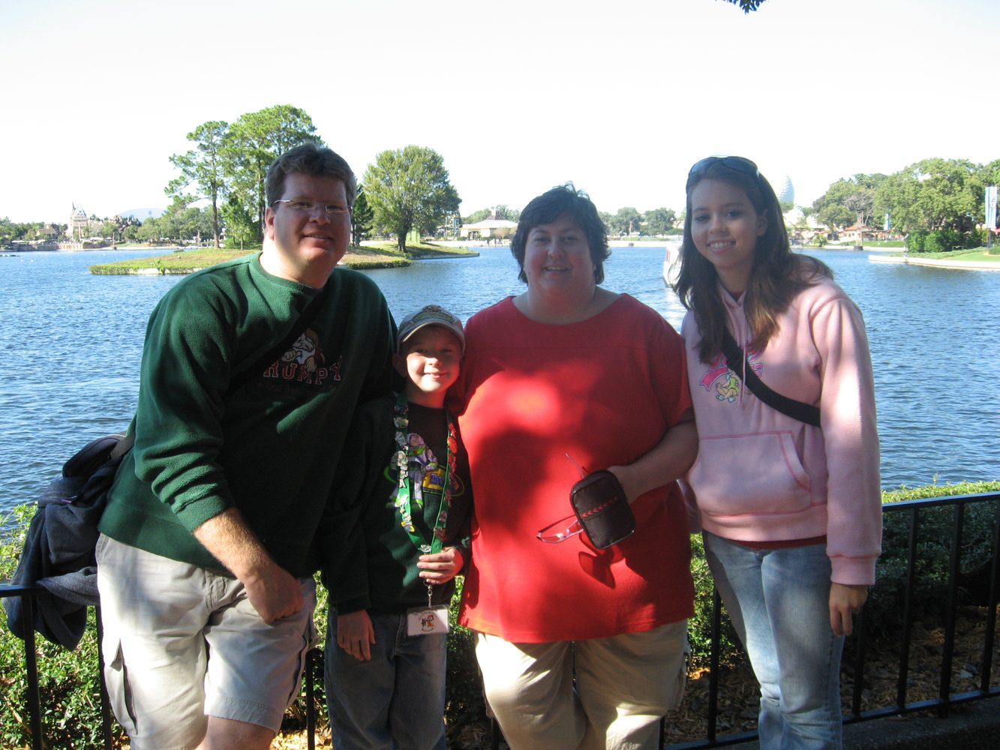
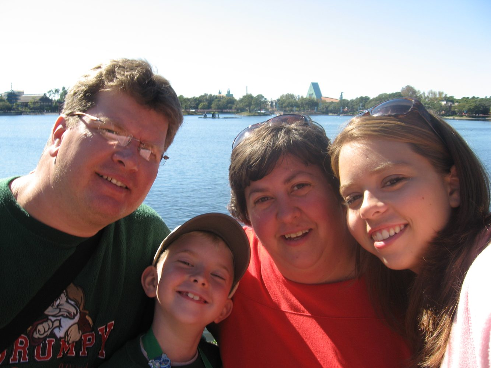
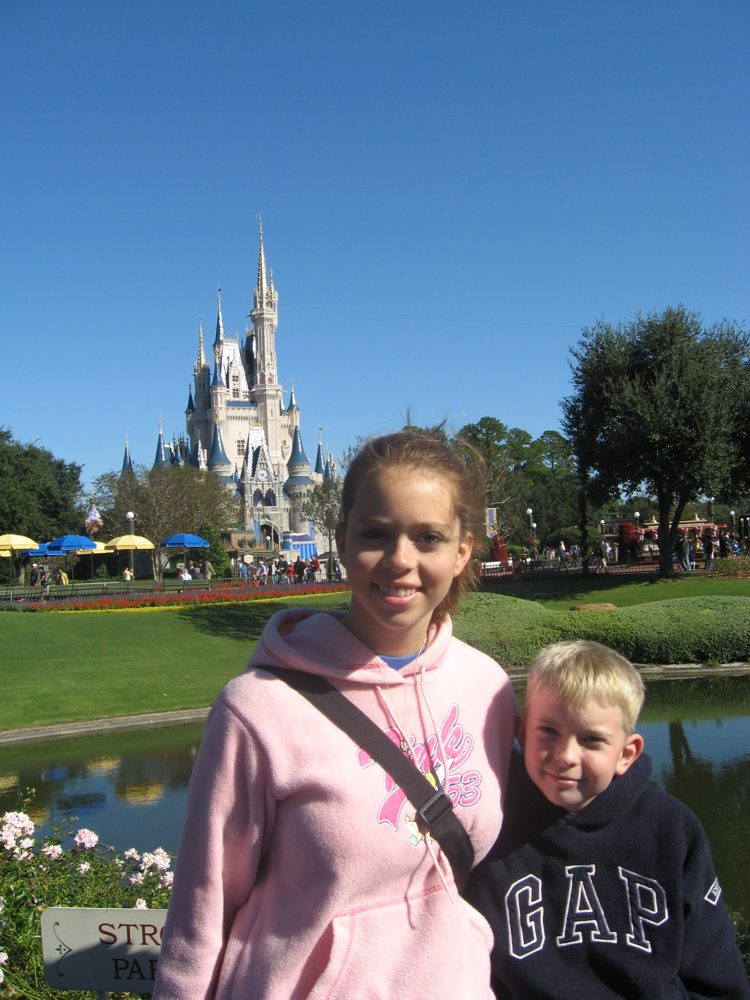
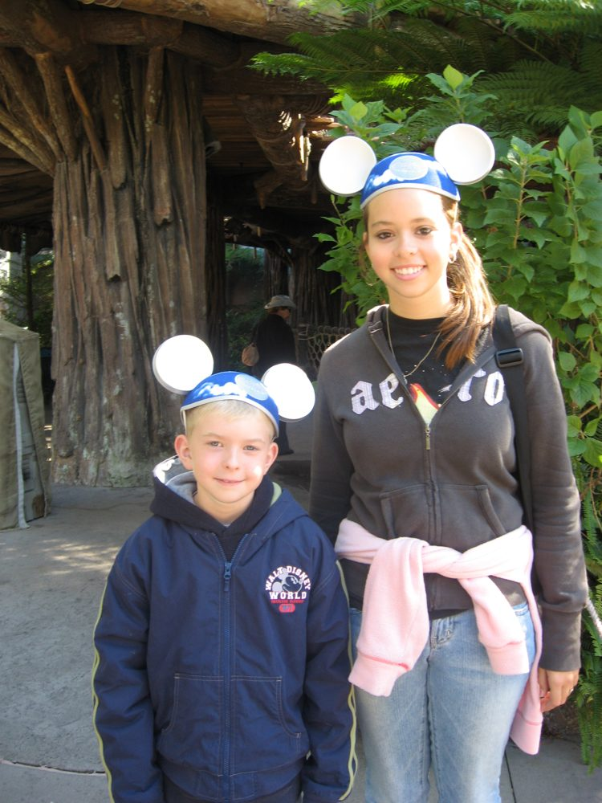
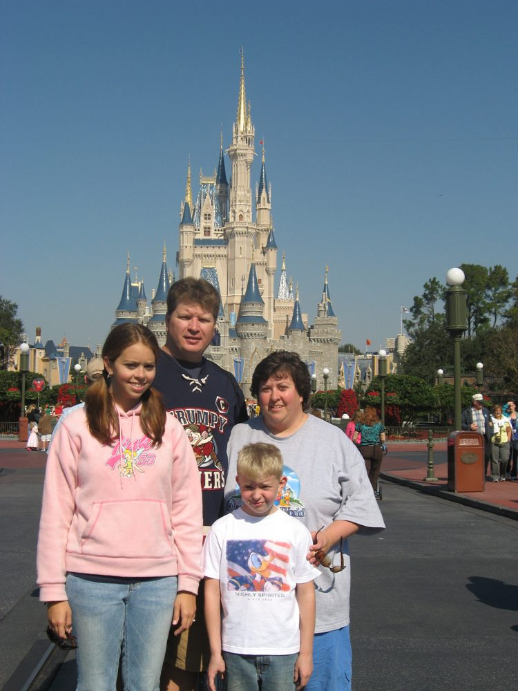
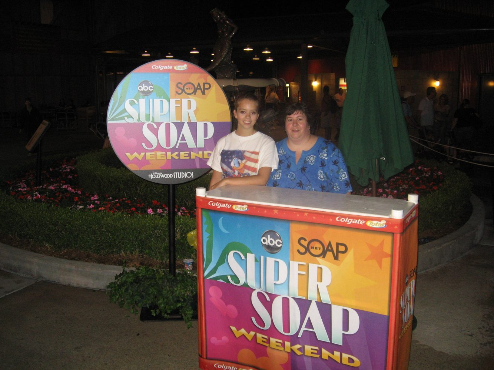
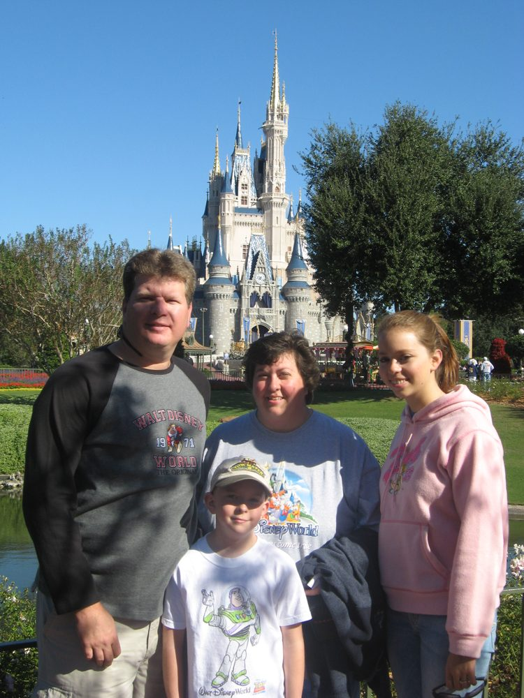